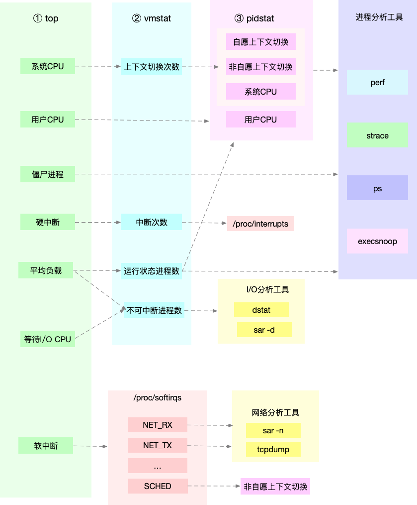

Linux 性能优化实战
CPU篇
- 平均负载与cpu使用率
- 平均负载：单位时间内，系统中处于可运行状态和不可中断状态的平均进程数
- 平均负载：top命令查看S列，R=可运行，D=不可中断，S=睡眠，Z=僵尸
- cpu使用率：%usr + %sys
- 情况1：CPU密集型进程，CPU使用率和平均负载基本一致
- 情况2：IO密集型进程，平均负载升高，CPU使用率不一定升高
- 情况3：大量等待CPU的进程调度，平均负载升高，CPU使用率也升高
- 上下文切换的三个场景
- 进程上下文切换：从A进程切换到B进程；在A进程用户态执行系统调用
- 线程上下文切换：因为在同一个进程，共享内存空间和全局变量，切换开销小一点
- 中断上下文切换：中断时只切换pc、sp、bp等，中断完成后继续在用户态运行
- 上下文切换：vmstat 5
- cs（context switch）是每秒上下文切换的次数。
- in（interrupt）则是每秒中断的次数。
- r（Running or Runnable）是就绪队列的长度，也就是正在运行和等待CPU的进程数。
- b（Blocked）则是处于不可中断睡眠状态的进程数。
- 上下文切换：pidstat -w 5
- cswch：每秒自愿上下文切换（voluntary context switches）的次数
- nvcswch：每秒非自愿上下文切换（non voluntary context switches）的次数
- 上下文切换的类型：watch -d cat /proc/interrupts
- 上下文切换的问题排查
- 自愿上下文切换变多了，说明进程都在等待资源，有可能发生了I/O等问题；
- 非自愿上下文切换变多了，说明进程都在被强制调度，说明CPU成了瓶颈；
- 中断次数变多了，说明CPU被中断处理程序占用，通过查看/proc/interrupts确定中断类型。
- top命令查看cpu信息：
- us 用户cpu
- sy 内核cpu
- ni nice cpu，代表低优先级用户态CPU时间
- id 空闲cpu，不包含iowait
- wa iowait，等待IO的cpu时间
- hi irq，硬中断
- si softirq，软中断
- st steal，其他虚拟机占用的CPU时间
- mpstat -P ALL查看cpu信息：
- %usr 用户cpu
- %nice nice cpu
- %sys 内核cpu
- %iowait 等待IO的cpu时间
- %irq 硬中断
- %soft 软中断
- %steal 其他虚拟机占用的CPU时间
- %guest 宿主运行虚拟机的CPU时间
- %gnice 以低优先级运行虚拟机的时间
- %idle 空闲cpu
- perf分析调用链
- perf record -g -p 3087
- perf report -f
- 案例1：top查看cpu使用率很高，但是pidstat却看不到具体进程
- 使用perf命令；使用execsnoop命令查看是否有短命进程不断被创建
- 案例2：top查看iowait很高，zombies数量不断增加
- pidstat -d 1，查看磁盘io高的进程
- 使用perf查看占用cpu高的地方
- pstree -aps 3084，-a输出命令行，-p指定进程号，-s输出父进程
- 中断
- 软中断：cat /proc/softirqs
- 硬中断：cat /proc/interrupts
- 答疑：
- 模拟iowait高：stress-ng -i 1 --hdd 1 --timeout 600
- pidstat中， %wait表示进程等待CPU的时间百分比。CPU状态是R
- top中，iowait%则表示等待I/O的CPU时间百分比。CPU状态是D
| 性能指标 | 工具 | 说明 |
|---|---|---|
| 平均负载 | top | 1分钟、5分钟、15分钟 |
| 系统整体CPU使用率 | vmstat 1 mpstat -P ALL 1 sar -P ALL 1 |
us sy id wa st %usr %nice %sys %iowait %steal %guest %gnice %idle %usr %nice %sys %iowait %steal %idle |
| 进程CPU使用率 | top pidstat -u 1 |
%CPU %usr %sys %guest %wait %CPU CPU |
| 系统上下文切换 | vmstat 1 | cs=上下文切换数 |
| 进程上下文切换 | pidstat -w 1 | cswch=自愿上下文切换 nvcswch=非自愿上下文切换 |
| 软中断 | top mpstat -P ALL 1 |
si=软中断 soft=软中断 |
| 硬中断 | top mpstat -P ALL 1 |
hi=硬中断 irq=硬中断 |
| 网络 | dstat 1 sar -n DEV 1 |
net列 pck/s=帧数/秒 kB/s=KB/秒 |
| I/O | dstat 1 sar -dp 1 |
dsk列 rkB/s和wkB/s |
| CPU个数 | lscpu | CPU(s)列 |
| 事件剖析 | perf execsnoop |
(无) |

# 1.1 模拟一个cpu使用率100%的场景，cpu负载会达到1
stress --c 1 --timeout 600
# 1.2 -P ALL 表示监控所有CPU，后面数字5表示间隔5秒后输出一组数据
mpstat -P ALL 5 // 可以看到其中一个cpu的%usr是100%
# 1.3 每5秒输出一次，-u表示输出cpu指标
pidstat -u 5 // 可以找到是那个进程占cpu
# 2.1 模拟IO压力，cpu负载会达到1
stress -i 1 --timeout 600
# 2.2 可以看到一个cpu的%sys是24%，%iowait是68%
mpstat -P ALL 5 1
# 2.3 可以找到%CPU高的那个进程
pidstat -u 5
# 3.1 8个进程同时抢占cpu，此时cpu负载达到8
stress -c 8 --timeout 600
# 3.2 可以看到8个进程的%wait达到75%
pidstat -u 5
# 4.1 以10个线程运行5分钟的基准测试，模拟多线程切换的问题
sysbench --threads=10 --max-time=300 threads run
# 4.2 每1秒输出一次，cs列次数达到139万，r列是8，us+sy的cpu已经是100%，in列中断此次达1万
vmstat 1
# 4.3 -w参数表示输出进程切换指标，而-u参数则表示输出CPU使用指标
pidstat -w 1 // cpu已经是100%
# 4.4 -t参数表示连同线程也一起输出
pidstat -w -t 1
内存篇
- Hack the Virtual Memory: malloc, the heap & the program break
- free命令的解释
- 第一列，total 是总内存大小；
- 第二列，used 是已使用内存的大小，包含了共享内存；
- 第三列，free 是未使用内存的大小；
- 第四列，shared 是共享内存的大小；
- 第五列，buff/cache 是缓存和缓冲区的大小；
- 第六列，available 是新进程可用内存的大小。
- top命令
- VIRT 是进程虚拟内存的大小。
- RES 是常驻内存的大小，即物理内存，不包括 Swap 和共享内存。
- SHR 是共享内存的大小，比如与其他进程共同使用的共享内存、加载的动态链接库以及程序的代码段等。
- %MEM 是进程使用物理内存占系统总内存的百分比。
- 内存耗用：VSS/RSS/PSS/USS 的介绍
- 用go查询/proc/pid/status和/proc/pid/smaps
- top命令中 CODE + DATA != RES 的原因
- top命令中的RES=ps命令的RSS，但是!=smem的RSS
- RSS = PrivateMem + SharedMem
- PSS = PrivateMem + (SharedMem / SharedProcessNum)
- USS = PrivateMem
- free命令的buff/cache，可以用
vmstat 1查看- Block Buffer：块设备的读写缓存。读写设备，会跳过文件系统
- Page Cache：文件的读写缓存。读写文件，先经过文件系统，再到设备
- Difference Between RAW IO and Direct IO
- 裸 I/O（Raw I/O）绕过（bypass）文件系统，直接写到设备上
- 裸 I/O（Raw I/O）：还是有Block Buffer的
- 直接 I/O（Direct I/O）仍然使用文件系统，但绕过（bypass）文件系统缓存
- 直接 I/O（Direct I/O）：跳过Block Buffer
- 17小节-案例1的三个工具：
- cachestat：整个操作系统缓存的读写命中情况。
- cachetop：每个进程的缓存命中情况。
- pcstat：文件在Page Cache中的统计信息
- 17小节-案例2：
- cachetop的HITS列表示命中次数，一次是一个内存页(4K)
- 用strace工具判断是不是使用了直接IO
- 直接IO，文件的数据不会用缓存，但是文件的元数据会用缓存
- 18小节-案例
- 系统级别查看内存占用：
vmstat 1 - 进程级别查看内存占用：
top -p 2315smem |grep -v grep |grep 2315ps -eo pid,comm,rss |grep 2315
- 查看内存泄漏点：
memleak -a -p $(pidof app)
- 系统级别查看内存占用：
- 20小节-案例
- /proc/sys/vm/swappiness：0表示尽量避免用swap分区；100表示积极使用swap
- 配置swap：可以配置swap分区或者swap文件
- 系统级别查看swap的使用：sar -r -S --human 1
- %commit，表示当前系统负载需要的内存，对需要内存的估计值。
- kbactive，表示活跃内存，也就是最近使用过的内存，一般不会被系统回收。
- kbinact，表示非活跃内存，也就是不常访问的内存，有可能会被系统回收。
- 进程级别查看swap的使用：smem -rs swap | head
- Swap，被交换到swap分区的部分
- 文件页（File-backed Page）
- Block Buffer、Page Cache、Memory-Mapped File
- 其中脏页需要写入磁盘后才能回收
- 匿名页（Anonymous Page）：应用程序动态分配的堆内存
- 缺页异常：
- 次缺页异常：可以直接从物理内存中分配时
- 主缺页异常：需要磁盘 I/O 介入（比如 Swap）时
- top命令可以查看进程的这两个指标，需按f键设置显示
IO篇
- Linux文件系统的四大基本要素
- 目录项：由内核维护的缓存。
- 超级块，保存在磁盘，存储整个文件系统的状态。
- 索引节点：保存在磁盘，存储文件大小、访问权限、修改日期、数据的位置等。
- 数据块区：保存在磁盘，存储文件数据。
- 查看磁盘索引节点总数：
df -i /dev/sda1，查看Inodes列 - 查看页缓存和slab缓存
cat /proc/meminfo，Cached行是Page Cache；SReclaimable行是可回收Slab缓存cat /proc/slabinfo | grep -E '^#|dentry|inode'，dentry行是目录项缓存；inode_cache行是VFS索引节点缓存；其余是各种文件系统的索引节点缓存。slabtop，查看内存占用最多的slab缓存
- Linux文件系统的层级：
- 文件系统层，包括虚拟文件系统和其他各种文件系统的具体实现。
- 通用块层，包括块设备I/O队列和I/O调度器。
- 设备层，包括存储设备和相应的驱动程序，负责最终物理设备的I/O操作。
- 磁盘I/O观测：iostat -d -x 1
- %util，就是磁盘I/O使用率；
- r/s + w/s，就是IOPS；
- rkB/s + wkB/s，就是吞吐量；
- r_await + w_await，就是响应时间。
- 进程I/O观测：pidstat -d 1
- 进程I/O观测：iotop
- 26小节-案例：
- top：系统的sys占用3%，iowait是30%；python进程的cpu是3%
- iostat -x -d 1：wkB/s列约是120M/s
- strace -p 18940：往fd=3的文件写300M的数据
- lsof -p 18940：查fd=3的文件是/tmp/logtest.txt
- 27小节-案例：
- top：系统的iowait是90%
- pidstat -d 1：找到读写频繁的进程
- strace -p 18940：查不到write调用，需要加-f参数
- filetop -C：查看读写频繁的进程（包含文件名）
- 28小节-案例：
- top：系统的iowait是60%，但是sys才1%
- iostat -d -x 1：rkB/s列约是32M/s，unit是97%
- pidstat -d 1：定位到问题进程mysql
- strace -f -p 27458：定位到问题线程28014在read大量数据，fd=38
- lsof -p 28014：查看不到此线程打开了哪些文件
- pstree -t -a -p 27458：找到此线程的父进程
- lsof -p 27458：找到fd=38的文件，进而知道是哪个mysql表
- show full processlist：找到慢sql，佐证是不是那张表
- 优化表的索引
- 29小节-案例：
- top：系统的iowait是84%，但是sys才6%
- iostat -d -x 1：wkB/s列约是2M/s，unit是0%
- pidstat -d 1：定位到问题进程是redis
- strace -f -T -tt -p 9085：-f表示跟踪子进程和子线程，-T表示显示系统调用的时长，-tt表示显示跟踪时间
- strace -f -T -tt -p 9085 -e fdatasync：只抓取fdatasync系统调用
{kind=link}
网络篇
- ifconfig命令RX和TX部分：
- errors 表示发生错误的数据包数，比如校验错误、帧同步错误等；
- dropped 表示丢弃的数据包数，即数据包已经收到了RingBuffer，但因为内存不足等原因丢包；
- overruns 表示超限数据包数，即网络I/O速度过快，导致RingBuffer满了而导致的丢包；
- carrier 表示发生传输错误的数据包数，比如双工模式不匹配、物理电缆出现问题等；
- collisions 表示碰撞数据包数。
- sar -n DEV 1：
- rxpck/s和txpck/s 分别是接收和发送的PPS，单位为包/秒。
- rxkB/s和txkB/s 分别是接收和发送的吞吐量，单位是KB/秒。
- rxcmp/s和txcmp/s 分别是接收和发送的压缩数据包数，单位是包/秒。
- %ifutil 是网络接口的使用率，即半双工模式下为 (rxkB/s+txkB/s)/Bandwidth，而全双工模式下为 max(rxkB/s,txkB/s)/Bandwidth。
- C10K IO模型优化
- 水平触发LT：有事件就触发，epoll默认的，实现简单，redis的方案
- 边缘触发ET：只触发一次，性能好维护麻烦，nginx的方案
- C10K 工作模型
- 主进程bind+listen，子进程们accept+epoll_wait
- 同上，但子进程们开启了SO_REUSEPORT，由内核确保只有一个进程被唤醒
- C10M的应对方案：DPDK或者XRP
- 36小节-套路篇
- hping3 作为一个 SYN 攻击的工具
- pktgen 只支持UDP发包(端口9)
- pktgen 可测试网卡发包时的pps和吞吐量
- iperf3 测试tcp/udp性能，可测试发包和收包的带宽极限
- wrk 测试http的性能
- 41小节-NAT（Network Address Translation）
- NAT根据实现方式的不同，NAT可以分为三类：
- 静态 NAT，即内网 IP 与公网 IP 是一对一的永久映射关系；
- 动态 NAT，即内网 IP 从公网 IP 池中，动态选择一个进行映射；
- NAPT：内网主机192.168.1.2要访问外网的166.111.80.200:80。首先要建立TCP连接，发送了1个IP包（Des=166.111.80.200:80，Src=192.168.1.2:1010），当IP包经过NAT网关时，NAT会将IP包的源IP转换为NAT的外网IP，同时将源Port转换为NAT动态分配的Port，然后转发到外网，此时IP包是（Des=166.111.80.200:80，Src=202.204.65.2:2010）
- NAPT是最流行的NAT类型，也可以分为三类
- 只做SNAT，即多个内网IP共享一个外网IP来访问外网
- 只做DNAT，例如外网IP:801对应内网A的80端口，外网IP:802对应内网B的80端口
- 双向地址转换，即外网IP与内网IP是一对一映射关系
- NAT根据实现方式的不同，NAT可以分为三类：
- 41小节-NAT案例
- ab -c 5000 -n 5000发现qps需要0.5s
- sudo nettrace --drop可以观察丢包现象，最多的是nf_hook_slow
- 用perf来得到调用nf_hook_slow最多的三个地方：ipv4_conntrack_in、br_nf_pre_routing、iptable_nat_ipv4_in
- 优化net.netfilter.nf_conntrack_max和net.netfilter.nf_conntrack_buckets
- 42小节
- 链路层和网络层：基准测试用pktgen
- 传输层：iperf3，用不同大小的包测试
- 应用层：ab、ark
- 优化网络I/O：使用epoll、使用AIO
- 优化工作模型：主进程listen子进程处理；多进程SO_REUSEPORT共同监听
- 44小节
- 服务器端开启Nagle算法，而客户端开启延迟确认机制，就很容易导致网络延迟增大
- 开启net.ipv4.tcp_tw_recycle容易导致连接失败，内核4.1已经废弃此参数
- 设置设置net.ipv4.icmp_echo_ignore_all=1，禁用ICMP协议，即禁ping
- 开启RPS(Receive Packet Steering)和RFS(Receive Flow Steering)，将应用程序和软中断的处理，调度到相同CPU，增加缓存命中率
- 卸载到网卡（原本软件处理的部分放到硬件处理），如下：
- 1，TSO（TCP Segmentation Offload）和 UFO（UDP Fragmentation Offload）：TCP 包的分段（按照 MSS 分段）和 UDP 的分片（按照 MTU 分片）功能，由网卡来完成 。
- 2，GSO（Generic Segmentation Offload）：在网卡不支持 TSO/UFO 时，将 TCP/UDP 包的分段，延迟到进入网卡前再执行。这样，不仅可以减少 CPU 的消耗，还可以在发生丢包时只重传分段后的包。
- 3，LRO（Large Receive Offload）：在接收 TCP 分段包时，由网卡将其组装合并后，再交给上层网络处理。不过要注意，在需要 IP 转发的情况下，不能开启 LRO。
- 4，GRO（Generic Receive Offload）：GRO 修复了 LRO 的缺陷，并且更为通用，同时支持 TCP 和 UDP。
- 5，RSS（Receive Side Scaling）：也称为多队列接收，它基于硬件的多个接收队列，来分配网络接收进程，这样可以让多个 CPU 来处理接收到的网络包。
- 6，VXLAN 卸载：也就是让网卡来完成 VXLAN 的组包功能。
| 性能指标 | 工具 | 说明 |
|---|---|---|
| 吞吐量 | sar -n DEV | |
| 网卡PPS | sar -n DEV | |
| tcp所有连接 | ss -anot netstat -anot |
|
| tcp连接统计 | ss -s netstat -anot | awk '{print $6}' | sort | uniq -c | sort -nr |
|
| 测试ICMP | ping | |
| 测试TCP连接 | hping3 | |
| NAT跟踪工具 | conntrack | |
| 网络链路检查 | mtr 8.8.8.8 traceroute 8.8.8.8 |
|
| DNS | nslookup g.cn dig +short AAAA api.mch.weixin.qq.com |
|
| 进程网络情况 | nethogs | |
| IP网络情况 | nettop |